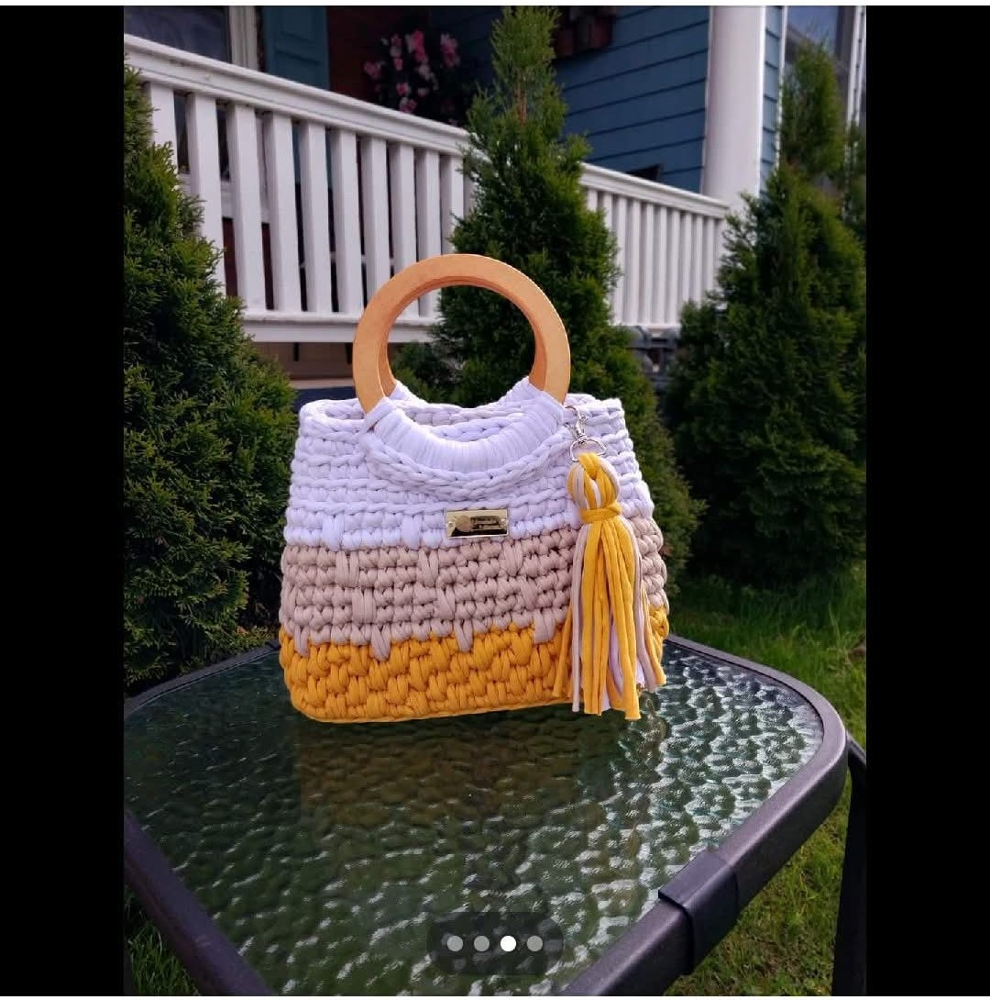

Tejidos Yohis nació como una respuesta a la falta de oportunidades laborales. En un momento de dificultad, surgió la idea de transformar la pasión por el tejido artesanal en una fuente de sustento y crecimiento personal.
Con dedicación y amor por las manualidades, comenzamos a elaborar bolsos, llaveros y crop tops tejidos a mano, piezas únicas que reflejan arte, tradición e innovación.
Fundada en el año 2024, la empresa busca impulsar el emprendimiento local, compartir el conocimiento artesanal y fomentar la autosuficiencia creativa.
En Tejidos Yohis, cada creación representa esfuerzo, inspiración y la convicción de que con talento y perseverancia se logran los sueños.
